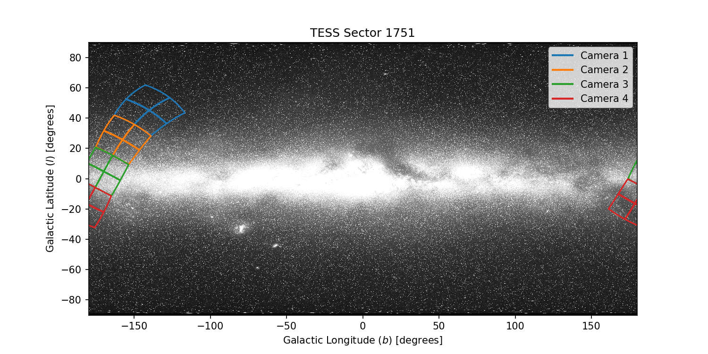
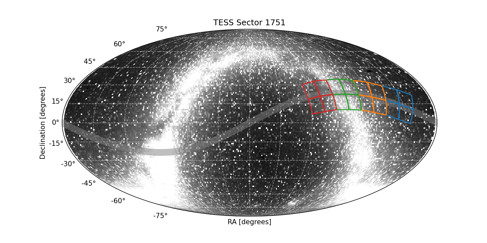

|
 |
 |
Sector 1751 Information
For full data release notes see: DRN136.
Sector Summary
Spacecraft Pointing (deg)
| RA | dec | roll | |
|---|---|---|---|
| Spacecraft | 109.4916 | 21.8424 | 84.3356 |
| Camera 1 | 146.623 | 14.309 | 162.411 |
| Camera 2 | 122.225 | 20.174 | 169.754 |
| Camera 3 | 96.549 | 22.518 | -0.760 |
| Camera 4 | 70.763 | 20.784 | 8.896 |
Orbit Summary
| Orbits | Dates (UTC) Start - End |
Cadence # Start - End |
Momentum dumps |
|---|---|---|---|
| 209b | 2026-01-15 - 2026-01-19 | 2036374 - 2039237 | 1 |
| 210a | 2026-01-19 - 2026-01-22 | 2039389 - 2041592 | 1 |
Sector Notes
| Noted Issue | Description |
| Comet 3I/Atlas observations: | TESS Sector 1751 represents a dedicated observation of the interstellar comet 3I/ATLAS1. The sector was designed to leverage the high cadence and precision of TESS photometry over multi-day time scales to provide insights into the comet’s activity following its closest approach to the Sun. This planned special sector interrupted normal operations in Sector 99 near the end of physical orbit 209, pointed to the comet field for ∼7 days, and then returned to normal operations in orbit 210. |
| Safe Modes: | In this sector, data collection was paused for two events. The first was a safe mode event, which occurred about 18 hr after the start of observations, and lasted for 2.81 days. The solar panel orientation was not updated for the Sector 1751 pointing, which resulted in limited energy generation. The subsequent increase in TESS’s battery discharge rate triggered the safe mode. |
| Spacecraft pointing: | The pointing in Sector 1751 was set at -0.4 degrees in ecliptic latitude. The four science cameras were oriented along the Ecliptic plane. Cameras 1 and 4 were used for guiding in Orbits 209b and 210a. |
| Data Products: | Given its short duration and focused objective, only a subset of the pipeline modules were run to produce data products relevant to the science goals at hand. The data products delivered to the MAST for this sector are as follows: calibrated target-pixel files for 37 postage stamps, each 50×50 pixel in size, that follow the comet’s path at 2-minute and 20-second cadences, light curves for PPA targets at 2-minute and 20-second cadences, and calibrated FFIs at 200-second cadence. |
| Scattered light: | In Sector 1751, the Earth introduces scattered light signals in Cameras 4 and 3 in the second half of orbit 210a. |